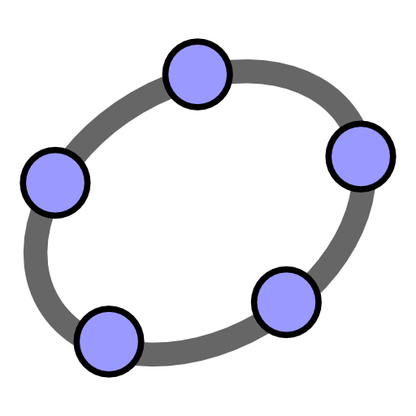

Suggestions musicales : ici


| CHAPITRE 5: TRIGONOMÉTRIE (PARTIE 1) DOCUMENTS: cahier 5 / corrigé des notes et exercices / corrigé PdM / ... |
||
| RÉCUPÉRATIONS le
midi au local 364: 8-sept, 13-sept, 19-sept, 29-sept, ... EXAMENS: Moodle C2 (20%) le 22-sept |
||
| GROUPE 505 |
GROUPE 507 |
GROUPE 508 |
| vendredi 8 septembre - correction notes p.8 - notes p.9-10 - devoir: notes p.11 et exercices p.64 #4 jeudi 7 septembre - notes p.6 / Le radian - notes p.7 / Exercices sur les longueurs d'arcs - notes p.8 (en devoir) - exercices p.64-(65) sauf #4 mercredi 6 septembre - correction du devoir - facultatif: La rationalisation - notes p.4 (vrai ou faux) - exercices p.63 mardi 5 septembre - notes p.1-3 / Explications sur la page 3 - devoir: notes p.4 (exercice en haut) vendredi 1er septembre - présentation du prof et du cours - inscription à Moodle - devoir: PdM p.265-267 #1 à 5 |
jeudi 7 septembre - correction notes p.8 - notes p.9-10 - devoir: notes p.11 et exercices p.64 #4 mardi 5 septembre - notes p.6 / Le radian - notes p.7 / Exercices sur les longueurs d'arcs - notes p.8 (en devoir) - exercices p.64-(65) sauf #4 vendredi 1er septembre - correction du devoir - facultatif: La rationalisation - notes p.4 (vrai ou faux) - exercices p.63 jeudi 31 août - notes p.1-3 / Explications sur la page 3 - devoir: notes p.4 (exercice en haut) mercredi 30 août - présentation du prof et du cours - inscription à Moodle - devoir: PdM p.265-267 #1 à 5 |
vendredi 8 septembre - correction notes p.8 - notes p.9-10 - devoir: notes p.11 et exercices p.64 #4 mercredi 6 septembre - notes p.6 / Le radian - notes p.7 / Exercices sur les longueurs d'arcs - notes p.8 (en devoir) - exercices p.64-(65) sauf #4 vendredi 1er septembre - correction du devoir - facultatif: La rationalisation - notes p.4 (vrai ou faux) - exercices p.63 jeudi 31 août - notes p.1-3 / Explications sur la page 3 - devoir: notes p.4 (exercice en haut) mercredi 30 août - présentation du prof et du cours - inscription à Moodle - devoir: PdM p.265-267 #1 à 5 |